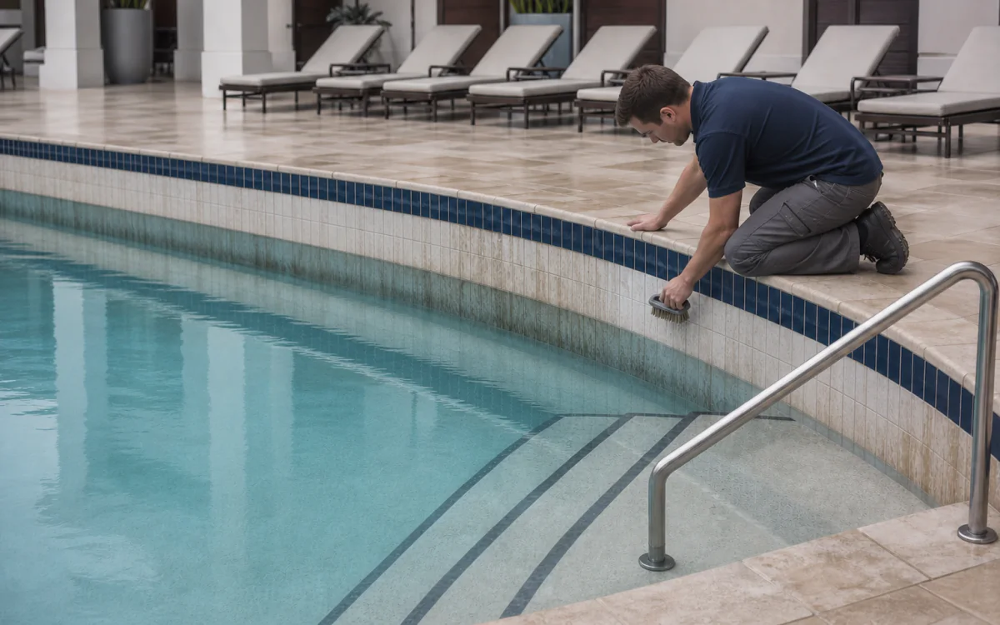
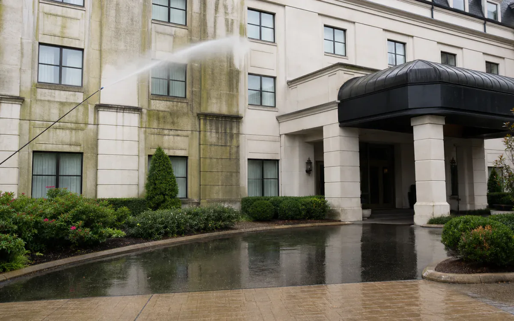
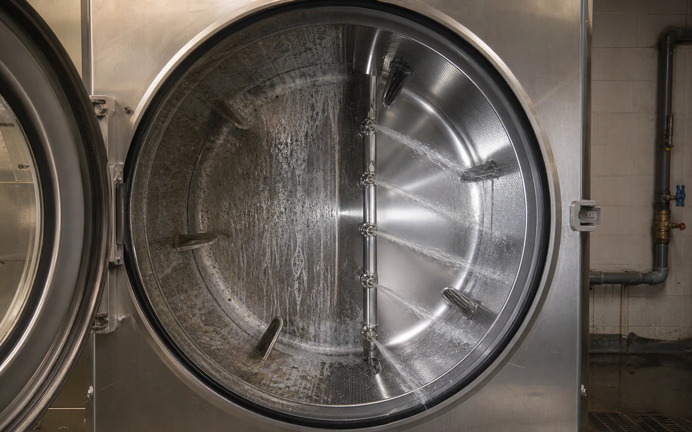
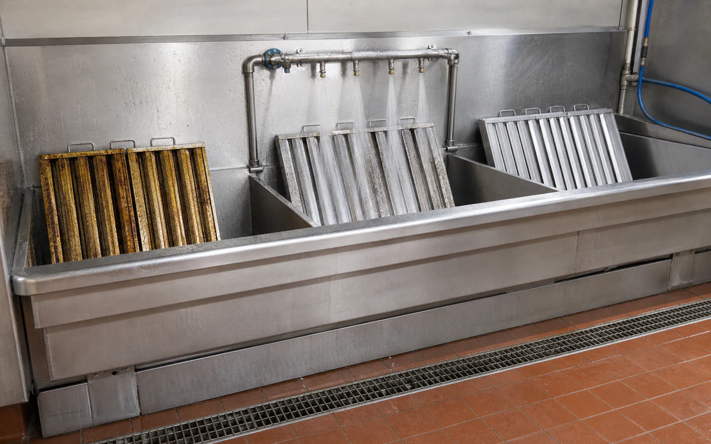

Industries › Hotels, Resorts & Property Management
Standardize chemistry by property zone, not by bottle count.
CR HD cuts kitchen grease, Descaler clears fixture and equipment scale, MultiWash handles daily grime, and LAM3 works on exterior stains.
- CleanCommercial kitchens, laundry equipment, restroom fixtures, mechanical rooms, pool-side hardscape, façades, drains, and parking surfaces
- RemoveCooking grease, soap scum, carbonate scale, body-soil film, algae staining, tire marks, and atmospheric grime
- Start withUse the right degreaser, descaler, or outdoor cleaner for each area and schedule the work around guests
- ProductsVertKleen MultiWash, VertKleen LAM3, VertKleen Descaler, VertKleen Neutral
- HMIS0-0-0 across every VertKleen product offered
- See products, first-test plan, and results
Cleaning chemistry for Hotels, Resorts & Property Management.
One clear plan helps every crew clean more consistently with less disruption to guests.
See VertKleen resultsWhat matters before you switch chemistry.
Prove removal on the actual soil and surface before replacing the incumbent.
Compare cost per completed job across labor, rinse water, wastewater handling, downtime, and return to service.




Recommended
VertKleen products for Hotels, Resorts & Property Management.
Match the formula to the soil, surface, and cleaning process.
Where VertKleen fits
Remove kitchen grease, soap film, scale, and outdoor stains while keeping guest areas presentable.
- Cleaning job
- Remove kitchen grease, soap film, scale, and outdoor stains while keeping guest areas presentable.
- Equipment and surfaces
- Commercial kitchens, laundry equipment, restroom fixtures, mechanical rooms, pool-side hardscape, façades, drains, and parking surfaces
- What needs to come off
- Cooking grease, soap scum, carbonate scale, body-soil film, algae staining, tire marks, and atmospheric grime
- Products to start with
- VertKleen MultiWash, VertKleen LAM3, VertKleen Descaler, VertKleen Neutral
- How to clean
- Use the right degreaser, descaler, or outdoor cleaner for each area and schedule the work around guests
- What to compare
- Finished result, crew time, product, water, passes, downtime, and repeat work.
Product files
Get the SDS, TDS, and product records your team needs.
Start with one job